← All workProject 9 of 10
Project 09Designed and calculated, not built
Geneva Indexing Table
A 6-station rotary indexing table driven by a 6-slot Geneva with a locking disc and a NEMA 23 stepper gearmotor. Designed in Inventor as one assembly driven by the crank angle, with the full Geneva kinematics, a torsional dynamics model, motor sizing, contact, jam and locking-accuracy calculations.
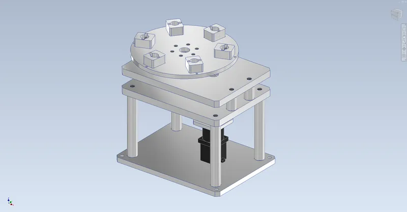
- Stations, 60 deg per index
- 6
- Indexes at the design point
- 30/min
- Index time (dwell 1.33 s)
- 0.67s
- Parts in assembly
- 91
01Overview
A bench rotary indexing table with a 300 mm aluminium table and six station nests. Under it, a 6-slot external Geneva wheel (4140, 174 mm across) is driven by a crank with an INA KR16 cam-follower roller on a 50 mm radius, 100 mm from the wheel axis. A locking disc on the crank sits in matching arcs on the wheel, so the table is held still for two thirds of every crank turn and moves 60 deg in the other third. The crank runs on two SKF 6204 bearings between two line-bored aluminium plates and is driven through a Ruland jaw coupling by an Oriental Motor NEMA 23 stepper with a Neugart PLE60 5:1 planetary gearhead.
The crank radius is C sin 30 deg, so the roller enters each slot moving straight along it and the wheel starts from zero speed (tangent entry). One Inventor parameter, Crank, moves the whole machine: the wheel angle is an Inventor expression of the exact Geneva law, clamped to the 120 deg engagement window, so the table indexes and dwells over any number of turns. The assembly is checked for clashes at 28 crank angles. Designed and calculated only; nothing has been built.
Tools Autodesk Inventor 2027 / Python / NumPy / SciPy / Shapely / Matplotlib
What I did
- Wrote the Geneva law into Inventor itself. One Crank parameter drives the crank, and the wheel angle is a round / min / max / atan expression that clamps to the 120 deg engagement window, so the model indexes and dwells correctly over any number of turns.
- Checked the locking geometry with an exact 2D sweep of the part outlines in Python (Shapely) before modelling, which caught a relief that would have hit the wheel and measured how far the table can move in the dwell.
- Built a 3-DOF torsional model from the Inventor inertias to get a real dynamic factor, and found that coupling stiffness, not the shaft, sets it.
- Wrote a buildability check with real part numbers. $569 of the $1,811 estimate is confirmed on vendor pages (gearmotor and coupling hubs). It lists five open items, including jam protection and the motor curve I estimated rather than read.
Specification
- Geneva
- External, 6 slots, tangent entry: centre distance 100 mm, crank radius 50 mm, wheel R87 x 14 4140 with induction-hardened flanks, slots 16 +0.04/+0.08
- Roller and lock
- INA KR16-PP stud cam follower (Cr 3.2 kN); locking disc R36 in R36.10 wheel arcs, R76 relief
- Motion
- 60 deg per crank turn: 120 deg engaged, 240 deg dwell; at 30 rpm, 0.667 s index and 1.333 s dwell
- Drive
- Oriental Motor PKP264D14A2-PLE60-5B (NEMA 23 stepper, Neugart PLE60 5:1, 3.28 Nm holding), Ruland MJC41 coupling, 98A spider
- Bearings and shafts
- 4 x SKF 6204-2RSH, cross-located in two line-bored 20 mm 6061 plates; 20 mm 1045 shafts, DIN 6885 keys
- Table
- 300 x 12 mm 6061-T6 on a keyed 1045 hub, six 50 x 40 mm station nests on R115
- Mass (Inventor)
- 23.2 kg: frame 14.6, wheel and table 5.3, gearmotor 1.65 (envelope); output inertia 0.079 kg m2 with 6 x 0.5 kg parts
- Assembly
- 91 occurrences, 33 unique files, 270 constraints, 0 DOF; 370 x 300 x 359 mm; driven by Crank
02Design decisions4 changes
- 01
Shaped the locking-disc relief with a 2D sweep
- Finding
- My first relief, a small cut next to the roller, overlapped the wheel by 304 mm2 while indexing. The sweep showed why: the wheel tips pass within 13 mm of the crank axis.
- Action
- Swept the exact part outlines through a full turn for relief circles centred 70 to 100 mm out, and picked R76 on 85 mm with a 0.10 mm lock clearance. The driver hub now stops below the wheel plane.
- Outcome
- At least 0.10 mm clearance everywhere, 0.06 deg of wheel play in the dwell (0.12 mm at the stations), and 1.03 mm between the wheel tips and the crank spacer in Inventor.
- 02
Found the dynamic factor with a torsional model
- Finding
- The Geneva steps from zero to 0.58 w^2 acceleration at entry. A rigid-body calculation can't show what that step does to a table on a flexible shaft.
- Action
- Simulated stepper field, rotor, gearbox, coupling, crank, Geneva and table as a 3-DOF torsional system with the Inventor inertias, and swept the coupling and shaft stiffness.
- Outcome
- The dynamic factor is 1.04 at the nominal stiffnesses, but 1.94 with a soft 300 Nm/rad coupling, so I specified the stiffest 98A spider and kept a factor of 2.0 for the strength checks.
- 03
Picked six slots and 30 indexes a minute
- Finding
- At the same crank speed a 4-slot wheel has 4x the peak acceleration and 10x the crank torque of a 6-slot wheel. An 8-slot wheel is gentler, but it only steps 45 deg.
- Action
- Compared 4, 5, 6 and 8 slots, then sized the speed against the stepper's estimated pull-out torque.
- Outcome
- Six slots match the six stations. At 30/min the crank needs 0.87 Nm (rigid), and the motor has a safety factor of 2.1. The limit at SF 1.5 is 36/min.
- 04
Flagged the jam toggle
- Finding
- If the table jams just after entry, the slot force has almost no lever about the crank, so the motor torque is multiplied without limit. A current limit can't catch that.
- Action
- Calculated the jam force across the engagement window: above the roller's static rating only in the first 1 deg after entry, and above the 5 mm table key's capacity in the first 14 deg.
- Outcome
- Listed stall detection and a 60 deg ball-detent torque limiter in the table hub as open items before building.
03Views10 renders


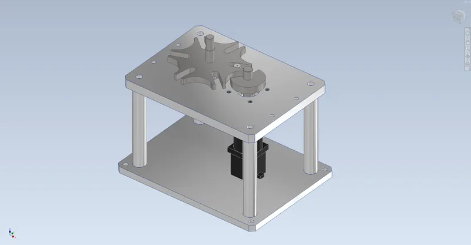

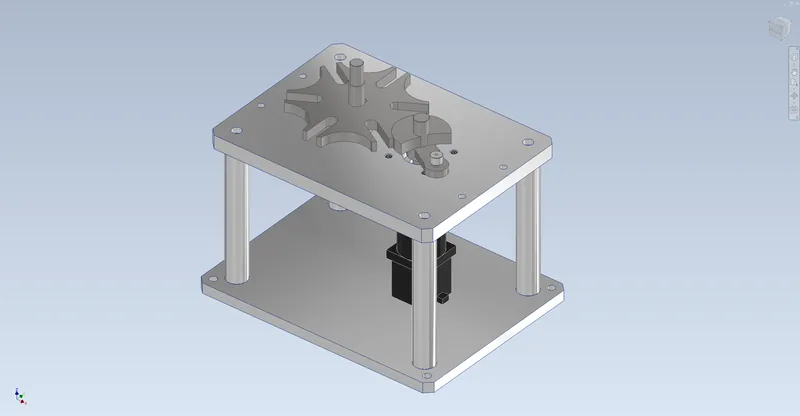

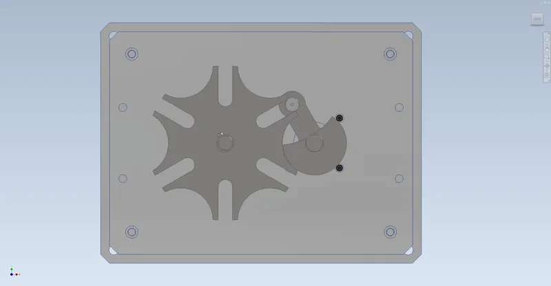

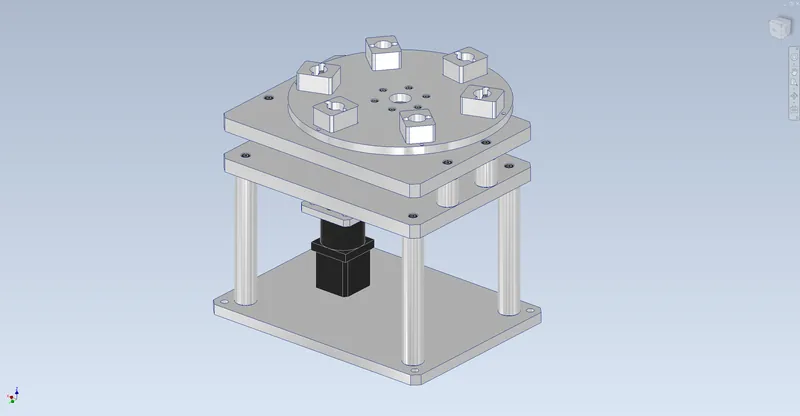

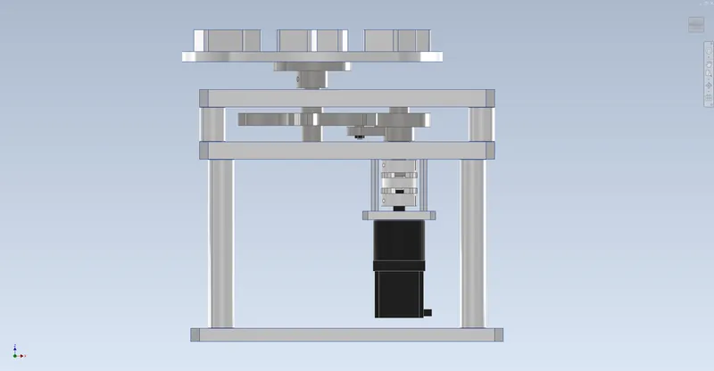

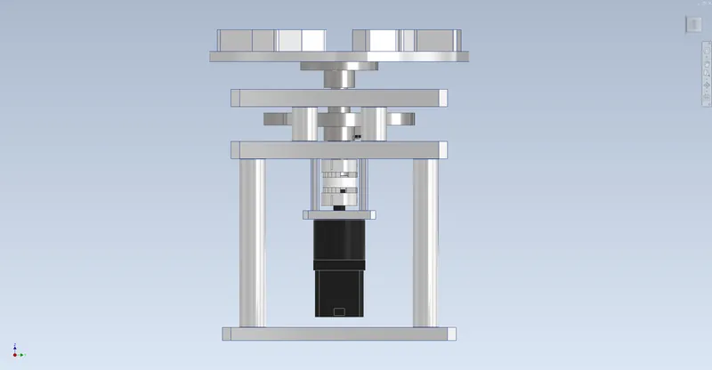

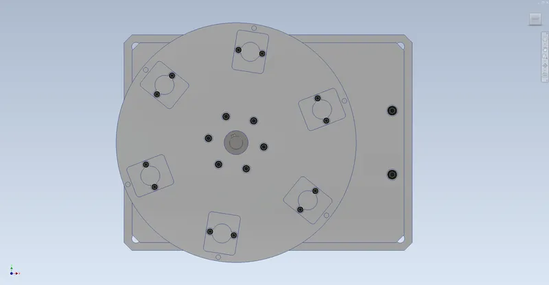

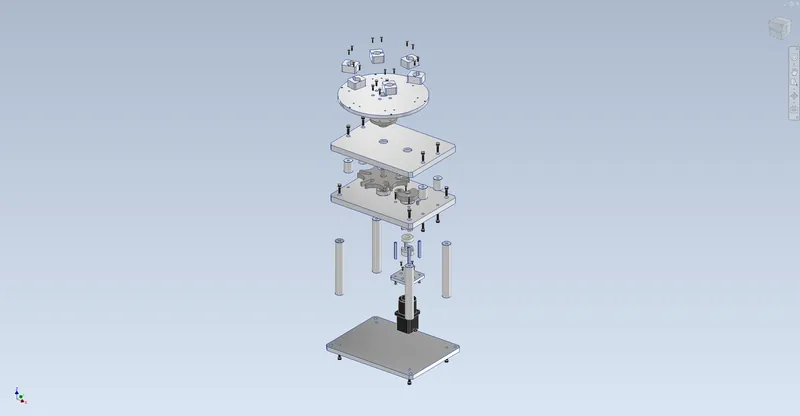

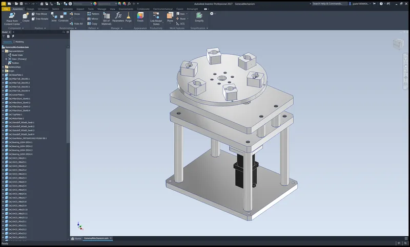
04Drawings6 sheets

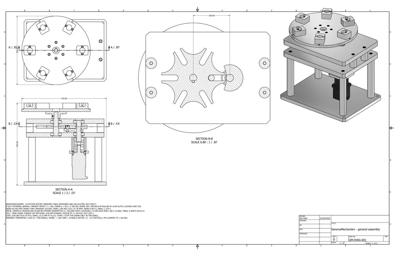

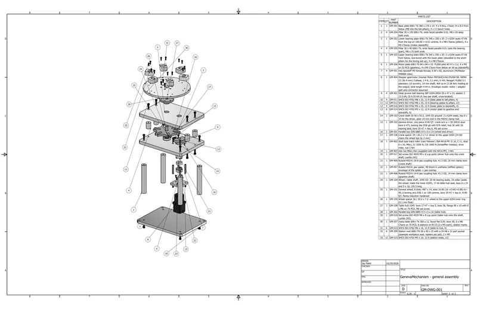

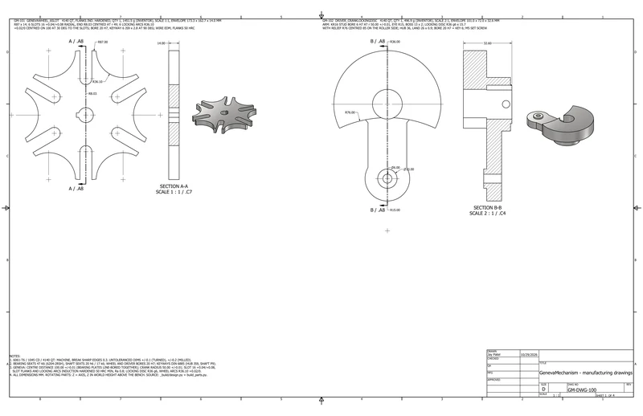

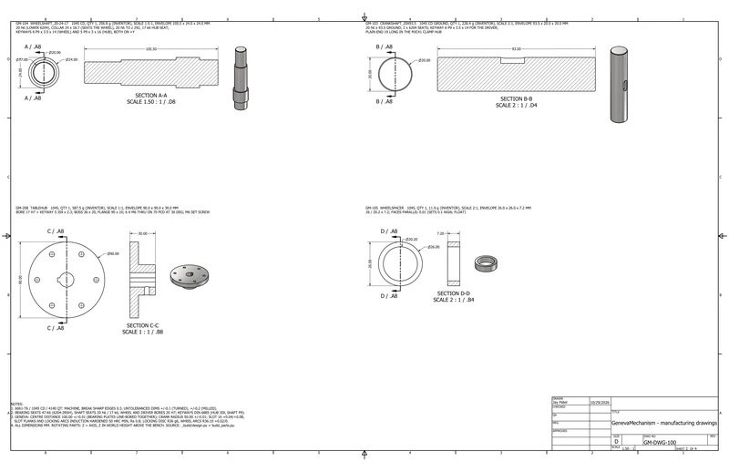

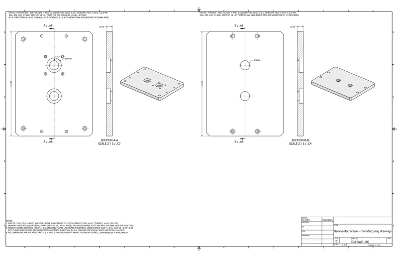

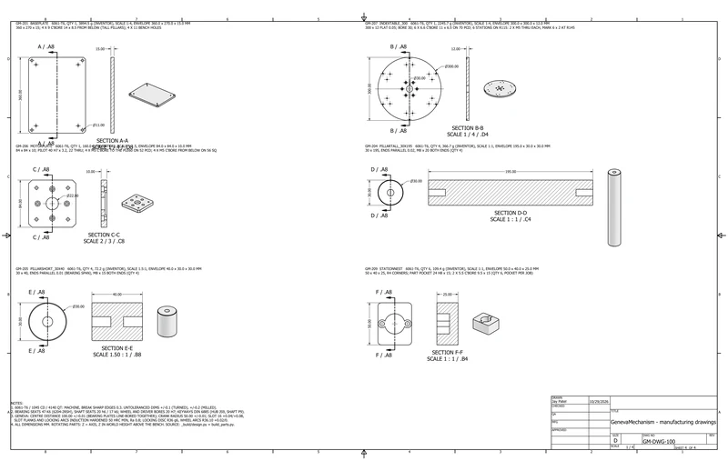
05Analysissimulated unless stated
A1 Kinematics

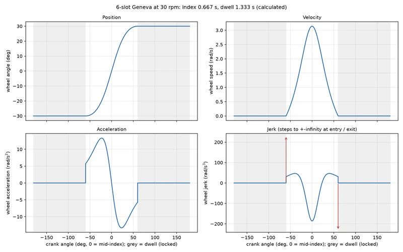

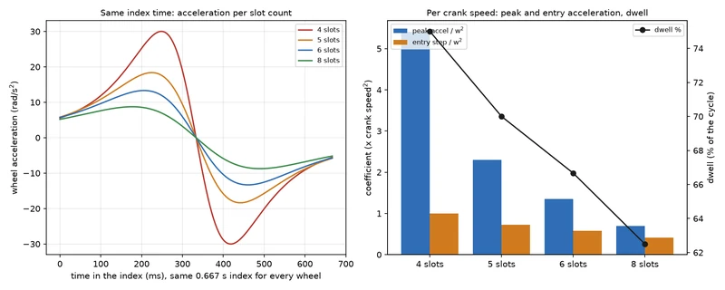

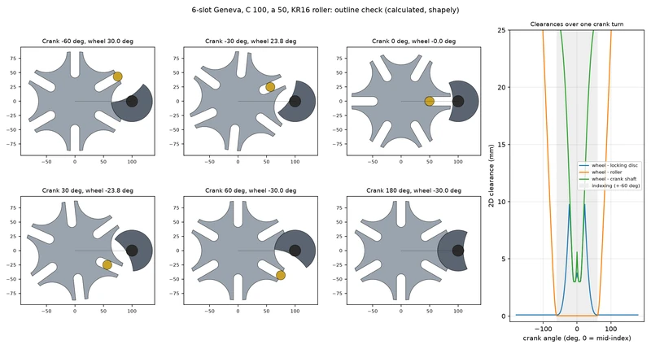
A2 Dynamics and strength

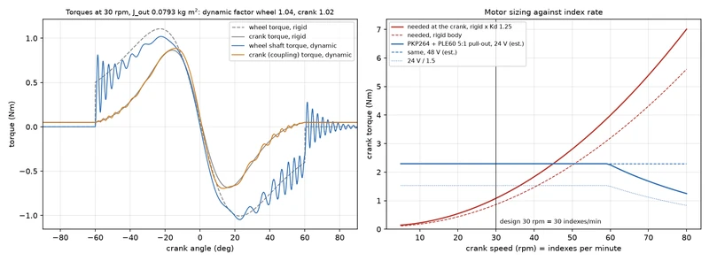

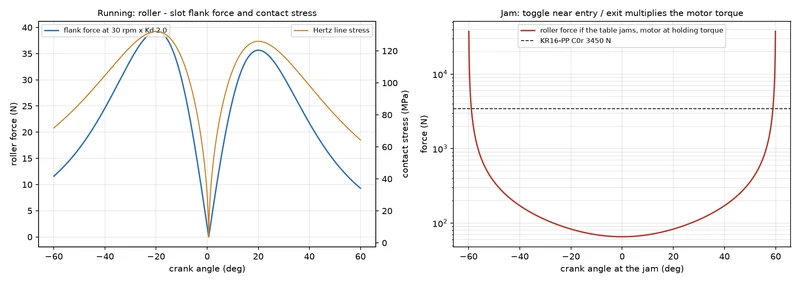
06Results8 checks
| Check | Result | Margin / status |
|---|---|---|
| Kinematics | Peak wheel speed 3.14 rad/s, peak acceleration 13.3 rad/s2 (1.35 w^2), 5.7 rad/s2 step at entry; 0.15 g at the stations | Calculated |
| Torque | Crank 0.87 Nm rigid, 0.89 Nm dynamic; wheel 1.11 Nm. Dynamic factor 1.04 nominal, up to 1.94 with a soft coupling | Calculated |
| Motor | Estimated pull-out 2.29 Nm vs 1.08 Nm needed: SF 2.1. Start and stop only in the dwell, so the motor never accelerates the table | Calculated |
| Contact | 39 N peak roller force, 132 MPa Hertz stress (SF 11 on hardened flanks); roller static SF 88 | Calculated |
| Locking | 0.06 deg wheel play in the dwell (0.12 mm at R115); 0.94 deg just after exit, so station work happens between crank 90 and 270 deg | Calculated |
| Entry shock | Tangent entry confirmed (0.0 deg); the acceleration step rings the table at 61 Hz and dies out in the dwell | Calculated |
| Interference | 0 clashing pairs at 28 crank angles from -180 to 420 deg; a deliberate 2 deg offset was caught, so the check is live | Checked in Inventor |
| Kinematics in CAD | Wheel and table angles match the Geneva law exactly (0.0000 deg error) at all 28 crank angles | Measured in Inventor |
07Parts list39 lines, $1,811.40
From the project's bill of materials (GenevaMechanism_BOM.csv), grouped by how you get each part. Quantities are from the CAD assembly. Prices marked Confirmed were checked against a vendor listing; Est. prices are estimates. Designed and calculated, not built.
- Buy · 65 pcs
- 21lines
- Print · 0 pcs
- 0lines
- Fabricate · 26 pcs
- 15lines
- Hardware · 6 pcs
- 3lines
- Confirmed
- $568.50 31.4%
- Est.
- $1,242.90 68.6%
Not complete for a working build. 1 item a working build needs is missing from this BOM; see What else you need.
P1 Buy purchased and vendor parts · 21 lines, 65 pcs
| Qty | Part no. | Description | Unit | Line |
|---|---|---|---|---|
| 2 off | GM-301 | Parallel key DIN 6885 A 6 x 6 x 14 (wheel and driver)Source: DIN 6885 A (McMaster / Misumi) · Material: C45 key steel (DIN 6885) | $1.50 | $3.00Est.2 × $1.50 |
| 1 off | GM-302 | Parallel key DIN 6885 A 5 x 5 x 16 (table hub)Source: DIN 6885 A (McMaster / Misumi) · Material: C45 key steel (DIN 6885) | $1.50 | $1.50Est.1 × $1.50 |
| 4 off | GM-401 | Deep groove ball bearing SKF 6204-2RSH 20 x 47 x 14, sealed: C 13.5 kN, C0 6.55 kN (4: two per shaft, cross-located)Source: SKF 6204-2RSH · Material: Bearing steel (52100)Price: distributor class price | $9.00 | $36.00Est.4 × $9.00 |
| 1 off | GM-402 | Stud type track roller (cam follower) INA KR16-PP: D 16, C 11, stud 6 x 16, M6x1, Cr 3200 N, C0r 3450 N (Schaeffler medias); drive roller, nut 3 NmSource: Schaeffler (INA) KR16-PP · Material: Bearing steel (52100)Price: distributor listings EUR 15-45 | $22.00 | $22.00Est.1 × $22.00 |
| 1 off | GM-403 | Hex nut M6x1 thin (supplied with the KR16-PP), 3 NmSource: Schaeffler (with KR16-PP) · Material: Steel, black oxide class 12.9 | Incl. | |
| 1 off | GM-405 | Ruland MJC41-20-A jaw coupling hub, 41.3 OD, 20 mm clamp bore (crank shaft)Source: Ruland MJC41-20-A · Material: Aluminium 7075 (Ruland hub)Price: RS Hong Kong HKD 248.80 (about USD 32) | $32.00 | $32.00Confirmed1 × $32.00 |
| 1 off | GM-406 | Ruland MJC41-14-A jaw coupling hub, 41.3 OD, 14 mm clamp bore (gearbox shaft)Source: Ruland MJC41-14-A · Material: Aluminium 7075 (Ruland hub)Price: RS UK GBP 26.71 ex VAT (about USD 34) | $34.00 | $34.00Confirmed1 × $34.00 |
| 4 off | GM-511 | SHCS ISO 4762 M8 x 20, 12.9 (base plate to tall pillars, 4)Source: ISO 4762 class 12.9 black oxide · Material: Steel, black oxide class 12.9 | $0.45 | $1.80Est.4 × $0.45 |
| 12 off | GM-512 | SHCS ISO 4762 M8 x 25, 12.9 (bearing plates to pillars, 12)Source: ISO 4762 class 12.9 black oxide · Material: Steel, black oxide class 12.9 | $0.50 | $6.00Est.12 × $0.50 |
| 6 off | GM-513 | SHCS ISO 4762 M6 x 16, 12.9 (table to hub, 6)Source: ISO 4762 class 12.9 black oxide · Material: Steel, black oxide class 12.9 | $0.30 | $1.80Est.6 × $0.30 |
| 8 off | GM-514 | SHCS ISO 4762 M5 x 12, 12.9 (motor plate to gearbox and standoffs, 8)Source: ISO 4762 class 12.9 black oxide · Material: Steel, black oxide class 12.9 | $0.25 | $2.00Est.8 × $0.25 |
| 12 off | GM-515 | SHCS ISO 4762 M5 x 16, 12.9 (station nests, 12)Source: ISO 4762 class 12.9 black oxide · Material: Steel, black oxide class 12.9 | $0.25 | $3.00Est.12 × $0.25 |
| 4 off | GM-516 | SHCS ISO 4762 M5 x 25, 12.9 (lower plate to standoffs, 4)Source: ISO 4762 class 12.9 black oxide · Material: Steel, black oxide class 12.9 | $0.30 | $1.20Est.4 × $0.30 |
| 1 off | GM-404 | Stepper gearmotor Oriental Motor PKP264D14A2-PLE60-5B: NEMA 23 (56.4 mm) 2-phase, 1.4 A, 2.1 ohm, 6 mH, Neugart PLE60 5:1 planetary (10 arcmin), 14 mm shaft; 464 oz-in (3.28 Nm) holding at the output; total length 4.44 in. Envelope model: motor / adapter split and connector assumedSource: Oriental Motor PKP264D14A2-PLE60-5B · Material: Steel / aluminium (stepper gearmotor)Price: catalog.orientalmotor.com web price 2026-10-29 | $502.50 | $502.50Confirmed1 × $502.50 |
| 1 off | GM-407 | Ruland MJC41 jaw spider, 98 Shore A urethane (stiffest option); envelope of the spider + jaw overlapSource: Ruland MJC41 spider 98A · Material: Polyurethane 98 Shore A (spider) | $12.00 | $12.00Est.1 × $12.00 |
| 1 off | GM-601 | Stepper driver for 1.4 A / 24-48 V, 1/16 microstep or finer (Oriental CVD or StepperOnline DM542T class)Not in CAD | $40.00 | $40.00Est.1 × $40.00 |
| 1 off | GM-602 | 24 V 5 A DC supply (Mean Well LRS-150-24 class)Not in CAD | $30.00 | $30.00Est.1 × $30.00 |
| 1 off | GM-603 | Home sensor: M12 inductive PNP (Omron E2E class) reading a flag on the driver arm, + bracketNot in CAD | $45.00 | $45.00Est.1 × $45.00 |
| 1 off | GM-604 | Controller: Arduino Uno R4 / small PLC, start / stop push buttons, E-stopNot in CAD | $60.00 | $60.00Est.1 × $60.00 |
| 1 off | GM-605 | Guard: 3 mm polycarbonate panels round the Geneva and the coupling (pinch points)Not in CAD | $40.00 | $40.00Est.1 × $40.00 |
| 1 off | GM-606 | Grease (lithium EP 2) on the roller and slot flanks, Loctite 243, 4 x M10 bench boltsNot in CAD | $15.00 | $15.00Est.1 × $15.00 |
| Buy subtotal | $888.80 | |||
P2 Fabricate machined, welded and cut parts · 15 lines, 26 pcs
| Qty | Part no. | Description | Unit | Line |
|---|---|---|---|---|
| 1 off | GM-101 | Geneva wheel, 6 slots: R87 x 14, slots 16.06 (16 +0.04/+0.08) to r 49, 6 locking arcs R36.1 on 100 centres, bore 20 H7 + key 6; 4140 QT, flanks induction hardenedSource: Machined in-house · Material: AISI 4140 QT 28-32 HRC, slot flanks induction hardened 50 HRCPrice: wire-EDM 4140 + induction hardening, one-off | $180.00 | $180.00Est.1 × $180.00 |
| 1 off | GM-102 | Geneva driver, one piece 4140 QT: crank arm a = 50 (KR16 stud bore 6 H7), locking disc R36 g6 with R76 relief, hub 36 with 26 bearing land, bore 20 H7 + key 6, M5 set screwSource: Machined in-house · Material: AISI 4140 QT 28-32 HRC, slot flanks induction hardened 50 HRCPrice: CNC turn + mill, one-off | $120.00 | $120.00Est.1 × $120.00 |
| 1 off | GM-103 | Crank shaft 20 h6 x 93.5, 1045 CD ground: 2 x 6204 seats, key 6 x 14 for the driver, plain 19 mm end in the MJC41 clamp hubSource: Machined in-house · Material: AISI 1045 CD steel | $25.00 | $25.00Est.1 × $25.00 |
| 1 off | GM-104 | Wheel / table shaft, 1045 CD: 20 h6 bearing seats, 24 collar (seats the wheel, loads the lower 6204), 17 k6 table-hub seat, keys 6 x 14 and 5 x 16; 105.5 longSource: Machined in-house · Material: AISI 1045 CD steel | $40.00 | $40.00Est.1 × $40.00 |
| 1 off | GM-105 | Wheel spacer 26 / 20.2 x 7.2: wheel to the upper 6204 inner ring (0.1 mm float)Source: Machined in-house · Material: AISI 1045 CD steel | $6.00 | $6.00Est.1 × $6.00 |
| 1 off | GM-106 | Crank spacer 24 / 20.2 x 7.2: driver to the upper 6204 (24 OD clears the wheel tips by 2 mm)Source: Machined in-house · Material: AISI 1045 CD steel | $6.00 | $6.00Est.1 × $6.00 |
| 1 off | GM-201 | Base plate 6061-T6 360 x 270 x 15: 4 x 9 thru, C'bore 14 x 8.5 from below (M8 into the tall pillars), 4 x 11 bench holesSource: Machined in-house · Material: Aluminium 6061-T6, clear anodised | $55.00 | $55.00Est.1 × $55.00 |
| 1 off | GM-202 | Lower bearing plate 6061-T6 340 x 250 x 20: 2 x 6204 seats 47 K6 from the top on 100.00 ±0.01 centres, 8 x M8 C'bores (pillars), 4 x M5 C'bores (motor standoffs)Source: Machined in-house · Material: Aluminium 6061-T6, clear anodised | $90.00 | $90.00Est.1 × $90.00 |
| 1 off | GM-203 | Upper bearing plate 6061-T6 340 x 250 x 20: 2 x 6204 seats 47 K6 from below, line-bored with the lower plate (dowelled to the short pillars for the boring set-up), 4 x M8 C'boresSource: Machined in-house · Material: Aluminium 6061-T6, clear anodised | $90.00 | $90.00Est.1 × $90.00 |
| 4 off | GM-204 | Pillar 30 x 195 6061-T6, ends faced parallel 0.02, M8 x 20 deep both endsSource: Machined in-house · Material: Aluminium 6061-T6 | $8.00 | $32.00Est.4 × $8.00 |
| 4 off | GM-205 | Pillar 30 x 40 6061-T6, ends faced parallel 0.01 (sets the bearing span), M8 x 15 both endsSource: Machined in-house · Material: Aluminium 6061-T6 | $8.00 | $32.00Est.4 × $8.00 |
| 1 off | GM-206 | Motor plate 6061-T6 84 x 84 x 10: PLE60 pilot 40 H7 x 3.2, 4 x M5 on 52 PCD (gearbox), 4 x M5 C'bore from below on 56 sq (standoffs)Source: Machined in-house · Material: Aluminium 6061-T6, clear anodised | $25.00 | $25.00Est.1 × $25.00 |
| 1 off | GM-207 | Index table 6061-T6 300 x 12, faced flat 0.05: bore 30, 6 x M6 C'bore on 70 PCD, 6 stations on R115 (2 x M5 each), station marksSource: Machined in-house · Material: Aluminium 6061-T6, clear anodised | $70.00 | $70.00Est.1 × $70.00 |
| 1 off | GM-208 | Table hub 1045: bore 17 H7 + key 5, boss 36, flange 90 x 10 with 6 x M6 on 70 PCD, M6 set screwSource: Machined in-house · Material: AISI 1045 CD steel | $45.00 | $45.00Est.1 × $45.00 |
| 6 off | GM-209 | Station nest 6061-T6 50 x 40 x 25 with a 24 H8 x 15 part pocket (example workpiece seat; replace per job), 2 x M5Source: Machined in-house · Material: Aluminium 6061-T6, clear anodised | $15.00 | $90.00Est.6 × $15.00 |
| Fabricate subtotal | $906.00 | |||
P3 Hardware fasteners, pins, keys, rings · 3 lines, 6 pcs
| Qty | Part no. | Description | Unit | Line |
|---|---|---|---|---|
| 4 off | GM-501 | Hex standoff M5 female-female, 8 AF x 60, aluminium (McMaster 94868A class)Source: McMaster-Carr hex standoff M5 x 60 · Material: Aluminium 6061-T6 | $4.00 | $16.00Est.4 × $4.00 |
| 1 off | GM-517 | Set screw ISO 4029 M5 x 6 cup point (driver hub onto the crank shaft, Loctite 243)Source: ISO 4029 cup point, 45H · Material: Steel, black oxide class 12.9 | $0.30 | $0.30Est.1 × $0.30 |
| 1 off | GM-518 | Set screw ISO 4029 M6 x 8 cup point (table hub onto the shaft, Loctite 243)Source: ISO 4029 cup point, 45H · Material: Steel, black oxide class 12.9 | $0.30 | $0.30Est.1 × $0.30 |
| Hardware subtotal | $16.60 | |||
P4 What else you need to make it work
From Tests/Buildability/buildability_check.md (2026-10-29). Verdict: BUILDABLE, with five things to settle before ordering.
Missing from the BOM
- Blocker
Jam protection: stall detection (encoder or a StallGuard-type driver) plus a ball-detent torque limiter in the table hub set near 5 Nm that re-engages every 60 deg. Near entry a blocked table multiplies the motor torque without limit; a current limit doesn't help.
Change before buying
- Motor curve and resonance: SF 2.12 uses an R-L estimate, not Oriental's pull-out curve; 150 motor rpm sits in the mid-band resonance zone. Run 1/16 microstepping or finer; the PLE60 10:1 version is the fallback.
- Coupling MJC41 98A: rated torque (9 Nm assumed) and torsional stiffness (600 Nm/rad assumed) not in the listings; below about 500 Nm/rad use a bellows coupling.
- Gearmotor drawing: the motor / adapter split, PLE60 face-hole orientation and shaft key are assumptions; match the motor plate and coupling bore to the drawing.
Also needed
- Quotes
- The wheel (wire EDM + induction hardening of the flanks and arcs) and the line-bored plates are the costly parts; all machining prices are estimates.
- Firmware
- Index on the M12 home sensor, work only between crank 90 and 270 deg (wheel play 0.06 deg there).
Cost in the buildability file: BOM $1,811.40 ($568.50 confirmed: gearmotor and coupling hubs), parts + estimated machining.
- Download BOM (CSV)CSV · 11 kB
- Buildability checkMD · 8 kB
08Files7 downloads
- Calculation reportPDF · 447 kB
- Assembly drawingPDF · 437 kB
- Manufacturing drawingsPDF · 315 kB
- Bill of materialsCSV · 11 kB
- Test summaryMD · 7 kB
- Buildability checkMD · 8 kB
- Assembly STEPSTP · 960 kB
09Limits and assumptionsread before quoting a number
Designed and calculated only: the table has not been built, and every number is a CAD measurement, a calculation or a catalogue value. The gearmotor's specs and price come from Oriental Motor's catalogue page and the gearhead data from Neugart's catalogue; its geometry is an envelope model. Its pull-out torque is my estimate from the winding data, because the published curve is an image. The coupling's torsional stiffness (600 Nm/rad) is assumed, so the dynamics were run from 300 to 3000 Nm/rad. Damping, bearing seal drag and the 0.5 kg payload per station are assumed too. Only the gearmotor and coupling hub prices are confirmed; the rest, machining included, are estimates. The first project plan called for interchangeable 4, 5 and 6-slot wheels; I built the 6-slot machine and compared the other slot counts in the calculations instead.